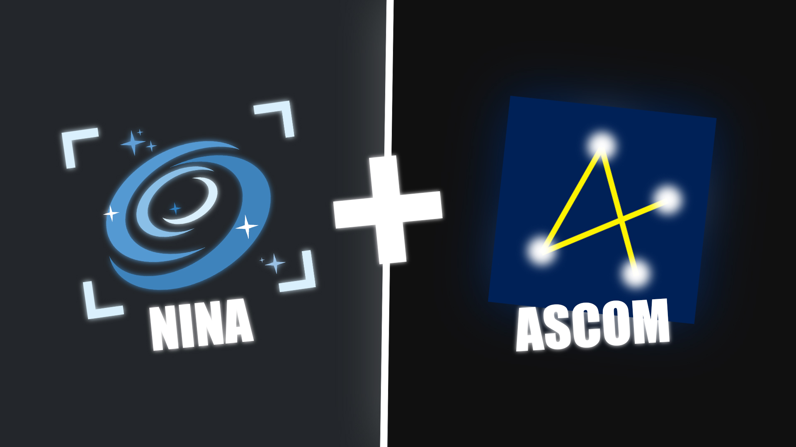

Building Custom ASCOM Drivers

This guide covers building ASCOM drivers to integrate custom hardware with NINA and other imaging software. It focuses on practical implementation and what actually matters for reliability.
Prerequisites: You should understand serial communication (Arduino/ESP32) and basic programming. This guide focuses on what's involved in making a working driver.
What ASCOM Does
ASCOM provides standard interfaces between astronomy software and hardware. It lets NINA control your mount, camera, focuser, and other devices through a common protocol. Custom hardware needs an ASCOM driver to integrate properly.
The driver translates ASCOM method calls into commands your hardware understands, sends them over serial, and reports status back to the software.
Getting Started
Use Visual Studio with ASCOM Platform 7 driver templates. Download ASCOM Platform and install the Visual Studio extensions. Templates generate the structure. You implement the hardware communication.
Pick your device interface:
- ICoverCalibratorV2 - Flat panels with motorized covers and lights
- IFocuserV3 - Motorized focusers with position tracking
- IFilterWheelV3 - Filter wheels with named positions
- IRotatorV3 - Camera rotators with angle control
- ISwitchV3 - Power switches and relay control
- ISafetyMonitorV3 - Weather sensors and safety monitors
Each interface defines required methods and properties. Templates include these. You fill in the serial communication logic.
Driver Architecture
Driver Class: Implements the ASCOM interface. Handles connection state for each client. Routes method calls to hardware class. Provides setup dialog for COM port selection.
Hardware Class: Manages the serial connection. Single shared instance for all clients. Tracks actual hardware state. Runs background threads for reading serial responses.
This structure lets multiple programs connect to your driver while maintaining one hardware connection.
Serial Communication Pattern
When NINA calls OpenCover(), your driver sends "open" over serial. Hardware responds with status messages. Driver updates internal state and reports back to NINA.
Commands like open, close, led:50. Responses like OPENING, OPEN, CLOSED.
Run a background thread that continuously reads serial and updates state variables. Never block ASCOM method calls waiting for hardware responses. Methods must return quickly (under 1 second).
NINA polls properties like CoverState or IsMoving to track completion. Your background thread updates these as hardware sends status messages.
Problems I Hit Building Mine
These weren't obvious from ASCOM documentation. Most broke during real imaging sessions, not bench testing.
USB Serial Reliability
Connections drop randomly. Packets get lost. Implement retry logic for failed commands. Send critical status messages multiple times from hardware with short delays between each. If one packet drops, others get through.
Hardware Timing
Servo takes 3 seconds to fully open. Without progress updates, NINA thinks the driver hung. Send status messages during operation so software knows it's executing, not stuck.
Initialization Delay
Wait 1.5 seconds after opening serial port before sending commands. Microcontroller needs time to initialize. First command fails without this delay.
State Synchronization
Send status request immediately after connecting. Syncs driver state with actual hardware position. Otherwise driver might report wrong state.
Timeout Recovery
If operation flag stays true for 10+ seconds without completion, reset it. Prevents driver from getting stuck if completion message gets lost.
Testing Your Driver
ConformU
Official ASCOM validation tool. Tests all required methods, timing, edge cases. Download from ASCOM GitHub. Run it before releasing your driver.
Break Things Deliberately
- Unplug USB during operation
- Power cycle hardware mid-command
- Send rapid repeated commands
- Connect multiple programs simultaneously
Driver should recover from all failures without crashing or leaving hardware in bad state.
Logging
Enable ASCOM TraceLogger. Log every command sent, response received, state change. When something breaks during unattended imaging, logs are your only diagnostic.
Common Mistakes
- Writing directly to registry instead of using ASCOM Profile object
- Opening permanent modeless windows instead of modal setup dialogs
- Not implementing all required interface methods
Configuration
Store COM port and device settings in ASCOM Profile. Provides persistent storage across sessions. Use the Profile object, don't write directly to registry.
Setup dialog should have COM port dropdown with refresh button. If user opens setup while connected, disconnect temporarily, allow changes, reconnect after.
Integration
Register driver with ASCOM using regasm or an installer. Connect in NINA via Equipment menu. Test full imaging sequence. Run unattended overnight to verify reliability under real conditions.